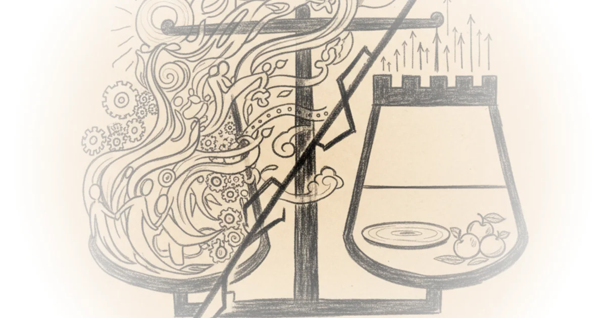

Telling is listening: Ursula k. Le guin on the magic of real human conversation Maria Popova · The Marginalian ·Jan 31, 2026 · 12 min read · Philosophy
Leaked: The truth behind moltbook, revealed Alberto Romero · The Algorithmic Bridge ·Jan 31, 2026 · 10 min read · Philosophy
When a woman makes a movie about men Tom van der Linden · Like Stories of Old ·Jan 31, 2026 · 16 min read · Philosophy
The capitalist vision of artificial intelligence Rezgar Akrawi · ·Jan 31, 2026 · 42 min read · Philosophy
Does global workspace theory solve the question of AI consciousness? Eric Schwitzgebel · ·Jan 30, 2026 · 13 min read · Philosophy
Addressing objections to the intelligence explosion Bentham's Bulldog · ·Jan 30, 2026 · 24 min read · Philosophy
How to humanize your AI writing in 10 steps Alberto Romero · The Algorithmic Bridge ·Jan 30, 2026 · 25 min read · Philosophy
The moral failings of the sermon on the mount: Reading nietzsche's beyond good and evil Wes Cecil · Wes Cecil ·Jan 30, 2026 · 27 min read · Philosophy
The mistake we're making on teens and social media Jacqueline Nesi · Techno Sapiens ·Jan 27, 2026 · 10 min read · Philosophy
The administration is eroding the case for keeping protests nonviolent Jesse Singal · ·Jan 26, 2026 · 15 min read · Philosophy
Contempt and scarcity: Late capitalism a survival guide Wes Cecil · Wes Cecil ·Jan 26, 2026 · 53 min read · Philosophy
Can science explain everything? - Sean carroll Alex O'Connor · Cosmic Skeptic ·Jan 25, 2026 · 76 min read · Philosophy
A simple argument against sufficientarianism Ben Burgis · Philosophy for the People ·Jan 25, 2026 · 12 min read · Philosophy 
Exponential view #558: Davos & reinventing the world; OpenAI's funk; markets love safety; books are… Azeem Azhar · ·Jan 24, 2026 · 10 min read · Philosophy
Andrew tate and andrea dworkin: The faces of sexism Michael Huemer · Fake Nous ·Jan 24, 2026 · 13 min read · Philosophy
The fine-tuning argument is terrible - sean carroll Alex O'Connor · Cosmic Skeptic ·Jan 23, 2026 · 12 min read · Philosophy
The isolation and excellence of the elite: Nietzsche's beyond good and evil Wes Cecil · Wes Cecil ·Jan 23, 2026 · 26 min read · Philosophy
Slightly against the "other people's money" argument against aid Scott Alexander · Astral Codex Ten ·Jan 22, 2026 · 16 min read · Philosophy
I finally figured out what bothers me about affect theory Robin James · ·Jan 22, 2026 · 19 min read · Philosophy
Good letters made good men. Why should we kick against the pricks, when we can walk on roses? Henry Oliver · ·Jan 22, 2026 · 20 min read · Philosophy
Why are there "academic marxists" who do not follow in marx's footsteps at all? Brad DeLong · DeLong's Grasping Reality ·Jan 20, 2026 · 15 min read · Philosophy
Introduction to cognitive bias: Crash course scientific thinking #1 Crash Course · Crash Course ·Jan 20, 2026 · 11 min read · Philosophy